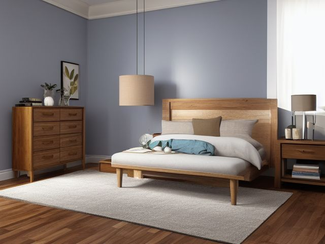

Primary Bedroom micro zone
Your Own Nightstand
The left nightstand, in the Primary Bedroom. This is your side, and it holds only what you reach for between getting into bed and falling asleep. On top: lamp, a lidded bottle or a coaster, one book, and a small dish holding your glasses. Five things or fewer, with no cable crossing the surface. The drawer has three divided sections with room left in each, and you can name what is in each one without opening it.
One session: 15-30 min, most of it in Sort, and most of that inside the drawer.
The short version
- Sort. Empty the drawer onto the bed
- Straighten. Divide the drawer so glasses, lip balm
- Shine. Lift everything off, wipe the top including the ring the water glass has been leaving
- Safety. Water and a power strip do not share this surface
- Standardize. Five things or fewer on the top, countable from the doorway
- Sustain. When you reach over to switch off the lamp
Each step in full, with what to have on hand and what done looks like, below.
Where it is
Primary Bedroom
6 micro zones, one session each
- 1The Bed and Bedding Zone
- 2Your Own Nightstand
- 3The Other Sleeper's Nightstand
- 4The Dresser Top
- 5The Dresser Drawers
- 6The Primary Closet
What done looks like
This is your side, and it holds only what you reach for between getting into bed and falling asleep.
- On top: lamp, a lidded bottle or a coaster, one book, and a small dish holding your glasses
- Five things or fewer, with no cable crossing the surface
- The drawer has three divided sections with room left in each, and you can name what is in each one without opening it
What done looks like
On top: lamp, a lidded bottle or a coaster, one book, and a small dish holding your glasses. Five things or fewer, with no cable crossing the surface. The drawer has three divided sections with room left in each, and you can name what is in each one without opening it.

Check these before you start
- Water and electricityAn open glass of water sitting beside a lamp base, a charger and a power strip on one small top is a single knocked elbow away from a problem. Put a lid on the water or move the power off the top.
- Burn or fireA lit candle on a nightstand sits level with the bedding and right where your sleeve passes when you reach for the lamp. If you want one burning at night, it burns on the dresser.
What to have on hand before you start
These are types of thing, not brands. If you already own something that does the job, that is the right one to use. Each says which pass needs it and what to watch out for.
- Streak-free glass and mirror cleaner Clean glass, mirrors, and polished surfaces, in the Shine and Sustain passes. Do not spray electronics directly.
- Color-coded microfiber cloth set ×12 Wipe, dust, and dry surfaces, in the Shine pass. Wash by use color; avoid fabric softener.
- Neutral pH multi-surface cleaner Routine cleaning of sealed surfaces, in the Shine and Sustain passes. Verify surface compatibility; lock around children and pets.
- Compact vacuum with attachments Remove dust, crumbs, and debris, in the Shine pass. Use appropriate attachment.
- Keep, Relocate, Donate, Recycle, Trash container set ×5 Support rapid item routing during Sort, in the Sort pass. Do not block exits.
- Portable cleaning caddy Transport and contain cleaning inputs, in the Straighten, Shine and Sustain passes. Secure chemicals from children and pets.
- Portable label maker Create durable standardized labels, in the Standardize and Sustain passes. Follow surface and adhesive guidance.
- Removable write-on labels Create temporary or adjustable visual controls, in the Standardize pass. Test on delicate finishes.
Only if it applies to the left nightstand: 1 more
Not every home needs these for the left nightstand. Each one is here because some do, and the reason is next to it.
- Cord Label Set Identify chargers and device cables, in the Standardize and Sustain passes. Install and use according to product instructions.
The six passes, in order
Work them in this order. Sorting after you have arranged things means arranging things you were about to remove.
Sort
Decide what stays. Everything else leaves the zone now.
Empty the drawer onto the bed. Dead pens, chargers for phones you no longer own, hotel earplugs still in their wrappers, and the four books you started and put down all go. A book you are not reading this week belongs on the shelf, not beside your head.
What to store it in, now that you know what you are keeping
Bins and shelves are for what Sort left behind, not a stand-in for it. Buying storage before sorting means buying a container for things you have not yet decided to keep.
Only if it applies to the left nightstand: 6 more
Not every home needs these for the left nightstand. Each one is here because some do, and the reason is next to it.
- Jewelry and Valet Tray Contain small personal items, in the Straighten, Standardize and Sustain passes. Do not overload; anchor wall-mounted or tall systems where required.
- Cable Management Kit Secure and label device cords, in the Straighten, Standardize and Sustain passes. Do not overload; anchor wall-mounted or tall systems where required.
- Folding Laundry Basket ×3 Move clean laundry back to rooms, in the Straighten, Standardize and Sustain passes. Do not overload; anchor wall-mounted or tall systems where required.
- Laundry Hamper Sorter Separate laundry by household method, in the Straighten, Standardize and Sustain passes. Do not overload; anchor wall-mounted or tall systems where required.
- Remote Control Tray Create one visible home for controls, in the Straighten, Standardize and Sustain passes. Do not overload; anchor wall-mounted or tall systems where required.
- Charging Dock Create one controlled device charging home, in the Straighten, Standardize and Sustain passes. Do not overload; anchor wall-mounted or tall systems where required.
Straighten
Give what stays a home, placed where the hand actually reaches.
Divide the drawer so glasses, lip balm and earplugs each sit in their own section instead of sliding into one heap, and clip the lamp and clock cords down the back leg so nothing loops across the top.
Shine
Clean it, and use the cleaning to inspect what you cannot see when it is full.
Lift everything off, wipe the top including the ring the water glass has been leaving, then wash the lampshade and the bulb so your reading light is the brightness you actually paid for.
Surface by surface, all 6 of them, with what to use on each.
Safety
Make the zone safe for everybody who uses it, including the shortest person.
Water and a power strip do not share this surface. Move the strip off the nightstand top and onto the floor behind it, and if you drink in bed, drink from a bottle with a lid.
Standardize
Write down the best way you know today, so it survives you forgetting.
Five things or fewer on the top, countable from the doorway. When a sixth turns up it is almost always a finished book or an empty glass; the book goes to the shelf and the glass goes to the kitchen that night.
Sustain
Attach the reset to something that already happens, so it keeps itself.
When you reach over to switch off the lamp, put the top back to five before your hand comes back. This side is yours alone and it takes seconds. Five is countable from the doorway, so slip needs no inspection, and the sixth item is almost always a finished book or an empty glass. The book goes to the shelf and the glass to the kitchen that night, which is the entire recovery. What loads this surface is the hour it works in, when nobody is going to carry anything back out of the room.
The phone charger
You know the phone should not sleep here, and you have kept it because it is your alarm. That is one job, and a nine pound clock does it. Buy the clock, move the charger to the dresser across the room, and give the phone a landing spot you have to stand up to reach. If you will not commit to that, then commit to the honest version instead: the charger stays, the phone lies face down, and something else comes off the top so you are still at five. What you cannot keep doing is calling the current arrangement temporary.
Cleaning it properly, surface by surface
Lift every item off before you wipe, because the point is the water ring and the dust you cannot see with the lamp and the glass in the way. Shade and bulb first, top and drawer next, cord and floor last.
Work down, not across. Whatever comes off a high surface lands on the one below it, so cleaning the floor first means cleaning it twice.
Carry these in with you. Neutral pH multi-surface cleaner; Compact vacuum with attachments; Color-coded microfiber cloth set; Portable cleaning caddy.
- The lampshade and the bulb
Lift the shade off, dust it or wash a washable one in mild soapy water and dry it fully, then wipe the cold bulb with a dry cloth so your reading light is the brightness you actually paid for. - The lamp base and switch
Wipe with a barely damp cloth, getting into the switch and the ring where fingers turn it on night after night. - The nightstand top and the water-glass ring
Clear everything off, wipe the whole top with the neutral pH cleaner, and work at the pale ring the water glass has been leaving. - The items themselves: the dish, the book and your reading glasses
Wipe the small dish and dust the top edge of the book, then clean your reading glasses with the dry microfiber only, not the glass cleaner, since window cleaner can strip the lens coating over time. - The drawer and its divided sections
Tip out the sections, vacuum the grit and crumbs from the corners, then wipe the base and both runners. - The floor and cable run behind the leg
Vacuum behind and beneath, then follow the lamp cord down to the floor to make sure nothing is snagged along the skirting.
How to clean anything else in the house, surface by surface.
Inspect as you clean. Cleaning is the only time you see the zone empty, so use it.
- A cracked, brittle or warm section on the lamp cord where it bends behind the leg.
- A scorch mark or brown patch on the inside of the shade, a sign the bulb runs hotter than the shade is rated for.
- The water ring darkening into the wood rather than wiping away, meaning the finish is starting to fail.
- A leg or joint that rocks when you lean your weight on the nightstand.
The standard that keeps it fixed
Five things or fewer on the top, one book at a time, and a divided drawer where every section has a name.
Reset trigger. When you reach over to switch off the lamp, that is the moment the top goes back to five.
The rest of the primary bedroom, in working order
Each of these is one session on its own. Finish this zone before you open the next.
- The Bed and Bedding Zone
- Your Own Nightstand, you are here
- The Other Sleeper's Nightstand
- The Dresser Top
- The Dresser Drawers
- The Primary Closet
The Primary Bedroom in full, with what each of the 6 zones is for
Zones that do the same job, elsewhere in the house
Different room, different name, same real job. Each one is its own page because the room around it changes what actually works.
Related reading
- Is the charger the reason something else never gets picked up first?
- Is one spot in this zone always the one you skip?
- Is the everyday item in this zone actually the easy one to reach?
- Still does not fit, even after the honest count?
- Before you buy storage for this zone
Questions people ask about this zone
- How long does it take to reset the left nightstand?
- One session: 15-30 min, most of it in Sort, and most of that inside the drawer.
- What does a finished left nightstand look like?
- On top: lamp, a lidded bottle or a coaster, one book, and a small dish holding your glasses. Five things or fewer, with no cable crossing the surface. The drawer has three divided sections with room left in each, and you can name what is in each one without opening it.
- What is the hardest call to make in the left nightstand?
- You know the phone should not sleep here, and you have kept it because it is your alarm. That is one job, and a nine pound clock does it. Buy the clock, move the charger to the dresser across the room, and give the phone a landing spot you have to stand up to reach. If you will not commit to that, then commit to the honest version instead: the charger stays, the phone lies face down, and something else comes off the top so you are still at five. What you cannot keep doing is calling the current arrangement temporary.
- How do you keep the left nightstand from getting cluttered again?
- Five things or fewer on the top, one book at a time, and a divided drawer where every section has a name. When you reach over to switch off the lamp, that is the moment the top goes back to five.
- What do you need to clean the left nightstand?
- Neutral pH multi-surface cleaner; Compact vacuum with attachments; Color-coded microfiber cloth set; Portable cleaning caddy.
- What do you clean first in the left nightstand?
- The lampshade and the bulb. Lift the shade off, dust it or wash a washable one in mild soapy water and dry it fully, then wipe the cold bulb with a dry cloth so your reading light is the brightness you actually paid for.
- Is there a water and electricity risk in the left nightstand?
- An open glass of water sitting beside a lamp base, a charger and a power strip on one small top is a single knocked elbow away from a problem. Put a lid on the water or move the power off the top.
- Is there a burn or fire risk in the left nightstand?
- A lit candle on a nightstand sits level with the bedding and right where your sleeve passes when you reach for the lamp. If you want one burning at night, it burns on the dresser.
When you want it off the screen
Carry Your Own Nightstand into the room
The method above is complete and free. The Whole House Print Pack puts Your Own Nightstand and the other 113 micro zones on 684 printable cards, so the steps you just read are not stuck behind a phone screen while your hands are full.
The Print Pack, 19 dollarsJust this zone, 4 dollarsOr draw a card free
Your Own Nightstand on its own is 4 dollars for 6 cards. All 114 micro zones is 19 dollars for 684. The whole house is the better buy; the single zone is here so you can take only what you are working on.
If Your Own Nightstand keeps fighting back, the real problem usually sits somewhere else in the room. A one hour virtual consult is 250 dollars: we find the function, the friction and the root cause together, and you keep a written standard for the space.
See what a consult covers, 250 dollars
Not ready to pay for that either? Ask which zone first, free